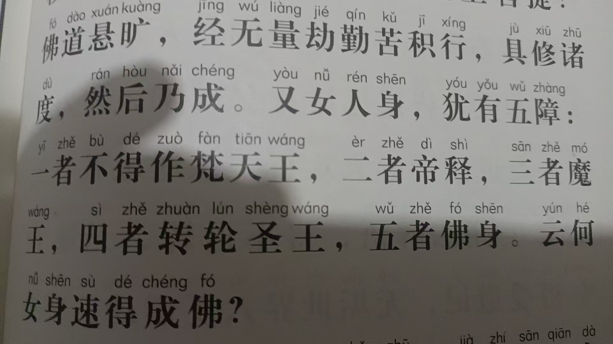
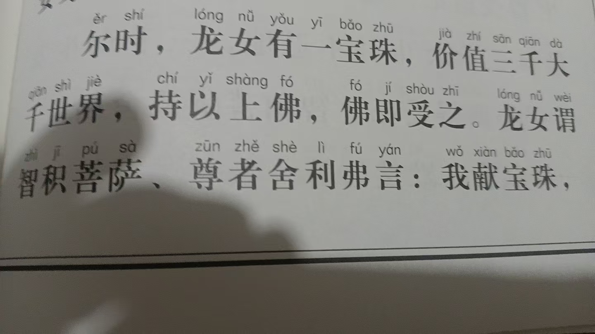
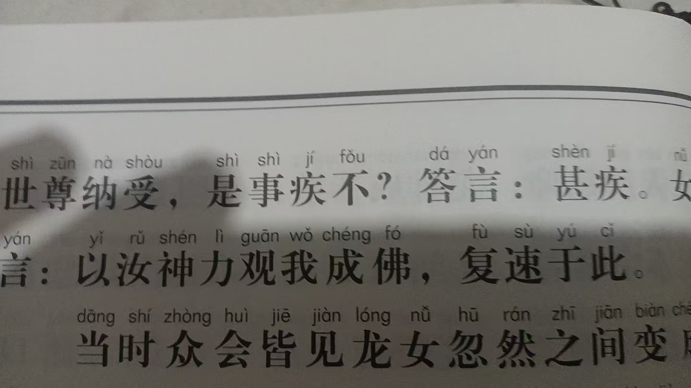

20260704龙女，不得男身，不能成就，不得做梵天王，不得帝释，不得魔王，不得转轮圣王，不得佛身，怎么成就的
修炼修行读经学习中
坐中，想到，让儿子把见宝塔品，做成一个视频
思乡佛号，那不就是做出来了吗
思乡佛号，那是阿弥陀佛世界景象
明天带家人去济南看儿子去



龙女，不得男身，不能成就，不得做梵天王，不得帝释，不得魔王，不得转轮圣王，不得佛身，怎么成就的
就是献了一颗宝珠，价值三千大千世界
龙女问智积菩萨，舍利弗，我献宝珠，做的快不快，
太快了
迅速变成男子，
迅速成就
不行就是不行，承认了不行，还要改变策略继续
还要继续造业啊
自然定律，可不同于法律，只要想做死，自然定律，可以直到把他送走
这个可不是我吓唬人
[呲牙][呲牙]
憍昙弥，做佛，号，一切众生喜见如来
这样就记起来了
以前我读莲花经
只有火宅部分
这后半部分，第一次读
他的妻子，也成佛了
号，具足千万光相如来
[强][强][强]
一曰慈二曰俭三曰不敢为天下先
要想参悟，必须有足够长的时间打坐入静
感觉自己都没有了，只是空觉
表面功夫，还要深入
禅定
[强][强][强]
[强][强][强]
[强][强][强]
[强][强][强]
[强][强][强]
[强][强][强]
《楞严经》
“色心诸缘，及心所使，诸所缘法，唯心所现。汝身汝心，皆是妙明真精妙心中所现物。